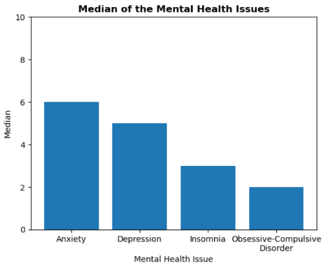
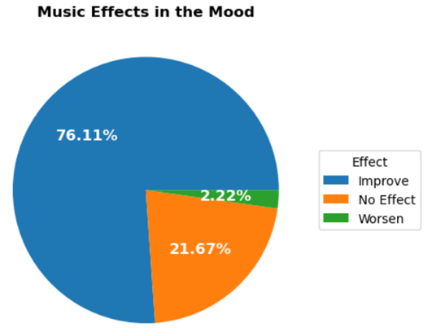
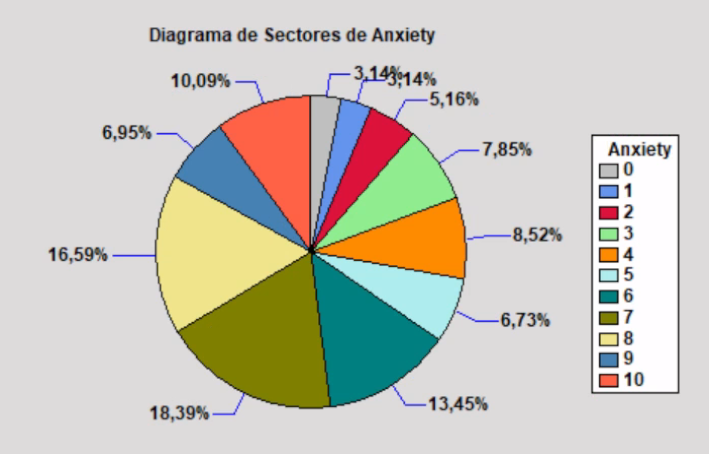
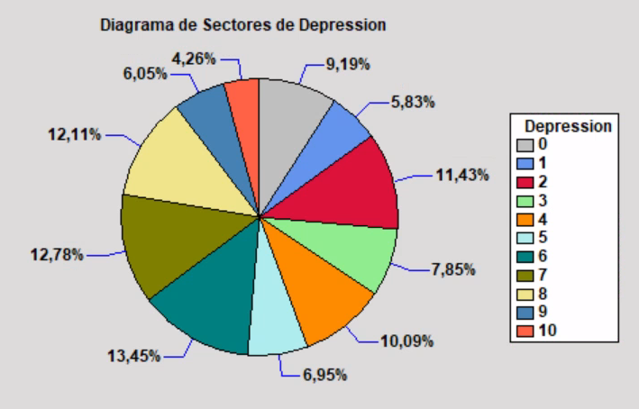
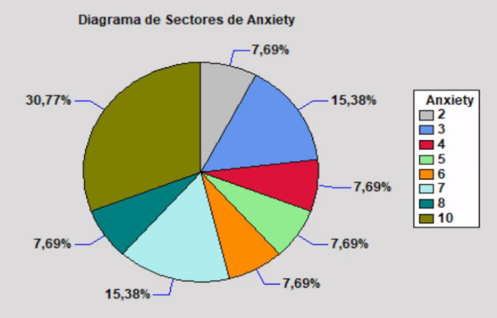
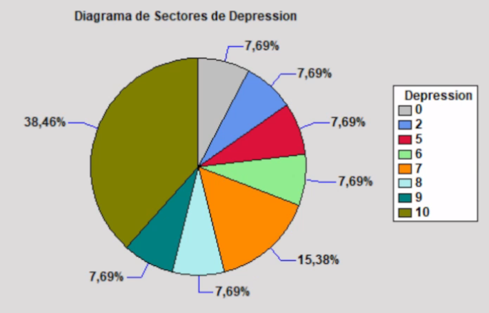
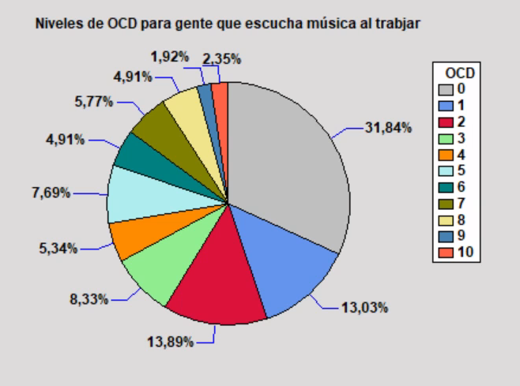
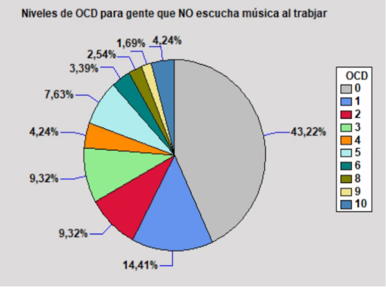
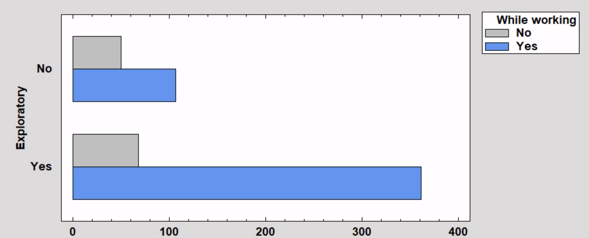

In the Multivariant Annexe, is confirmed that every range of age has the same distribution of values
of Anxiety, Depression, Insomnia and Obsessive-Compulsive Disorder (OCD). This helps to bring conclusions
for the whole sample and not for an isolated age range. Age isn't related to mental health.

This is a bar chart with all the medians of the mental health issues.
As it can be seen, Anxiety and Depression have higher levels than the other two.
Can be mentioned that the data of Axiety is concentrated with high values.
It is known that mental health can affect the cotidian activities perception, like listening to
music. Music effects talks about perceptions.

A pie chart of the Music Effects variable. 76,11% believe that music has positive effects on the mind.
If all 3 perceptions are compared with Anxiety and Depression, it can be seen that APPARENTLY people who think
music has negative effects on them have actually higher levels of these variables. The Box&Whisker
graph shows it.
How does a Box&Whisker work?
A Box and Whiskers plot shows the range and spread of data. The box displays the middle 50%,
with a line for the median. The "whiskers" are lines which go out the box that
extend to the smallest and largest values. Any data points outside these whiskers are shown
as dots, called outliers. This plot helps us see where most of the data lies and the unusual values.
We are not satisfied with only the Box&Whiskers graphs. If we filter the sample for people
who believe that music improves their health and make a pie chart
according to levels of depression and anxiety, and then repeat the same filtering for
people who believe that it worsens their mental health, you obtain:
|
Anxiety |
Depression |
| Mussic Effect = IMPROVE |
 |
 |
| Music Effect = WORSEN |
 |
 |
Curiously, by watching these sectors diagrmas, people who believe that music has
a positive effect have hihgher levels of Anxiety (>=6) than does who conceive music negatively,
negative effect. In Depression the opposite happens. There is more volume in the sectors with the highest levels of depression (>=5) in those who consider that music makes them worse.
Paying attention to the Pearson correlation table, you can see how there is a slight
relationship between people with anxiety and obsessive compulsive disorder (OCD),
of 0.34 out of 1. 68.94% of the sample has values less than or equal to to 4 for OCD,
meaning that high OCD values are not common (Univariant Annexe).
| OCD for people who While working = YES |
OCD for people who While working = NO |
|  |
 |
The relative frequency or probability of listening to music while working is 79,86%.
The probability of NOT hearing it is 20,14%. If we consider OCD values > 4 as those
that are less common, the cumulative probability would be 31.06%. Knowing this it
is possible to obtain the Probability(While Working=Yes & OCD > 4) = 0.7986 * 0.3106 = 0.2480 = 24.8%.
Meanwhile Probability(While Working = No & OCD > 4) = 0.2014 * 0.3106 = 0.0625 = 6.25%.
In other words, you are four times more likely to have abnormal OCD values if
you listen to music while you work.
People with higher levels of OCD are more likely to listen to music while working.
Music, especially music with repetitive and predictable rhythms, can provide a structure
that resonates with the organizational and routine needs of someone with OCD.
Also highlight the relationship between people who listen to music while
working and who like to explore (exploratory) new genres. There are many more
who are exploratory and listen to music while working, 85%, than people who
are not exploratory and listen to music while working 68%.
